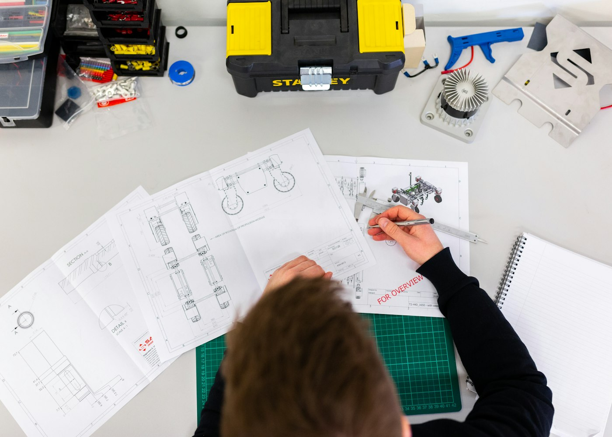
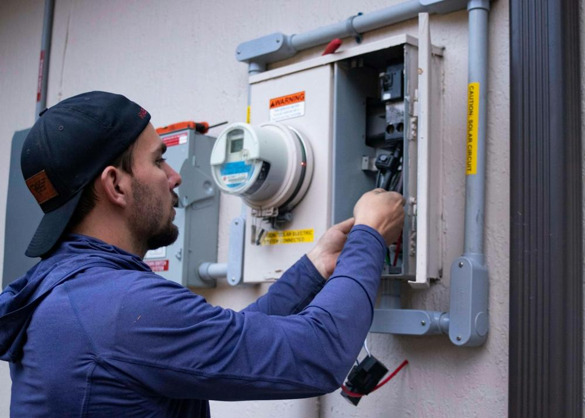
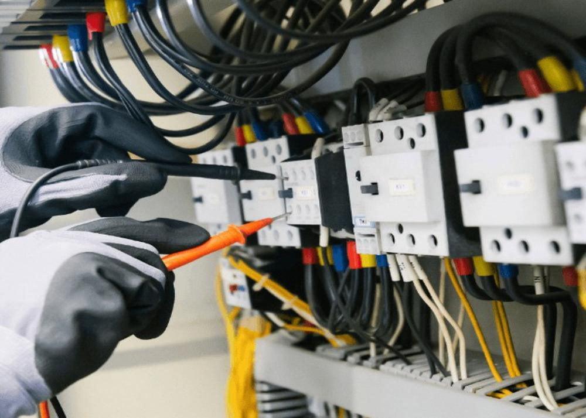

Instalação elétrica
Projetos e adequações.
ELETRICISTA EM RIBEIRÃO PRETO
Atendimento rápido para sua casa ou empresa, com diagnóstico claro e serviço responsável.
Serviços
Instalação, manutenção e reparos com diagnóstico antes de qualquer troca.
Projetos e adequações.
Evite falhas e interrupções.
Troca e dimensionamento.
Organização e segurança.
Instalação e reparo.
Diagnóstico rápido.
Soluções para cada ambiente.
Adequação e orientação.
Como funciona
Mande foto e conte o problema.
Avaliamos a urgência.
Visita técnica e serviço seguro.
Nossa essência
Da troca de um disjuntor à revisão completa, a VoltPro chega preparada para identificar a causa e executar o serviço com segurança.
Em campo
Ferramenta certa, EPI e serviço conferido antes de sair.




Em destaque
Pode indicar sobrecarga ou falha.
Interrompa o uso e peça avaliação.
É importante identificar a causa.
Avaliações · 4.9/5
“Conseguiu identificar a falha no quadro e resolveu no mesmo dia. Atendimento muito profissional.”
“Chegaram no mesmo dia e explicaram o que causou o curto.”
“Trocaram o quadro inteiro e deixaram tudo identificado.”
Antes de começar
Consulte a disponibilidade imediata pelo WhatsApp.
Sim, após entender o serviço e, quando necessário, visitar o local.
Vamos conversar
Mande uma foto e descreva o problema. Respondemos rápido.
Conversar no WhatsApp ↗